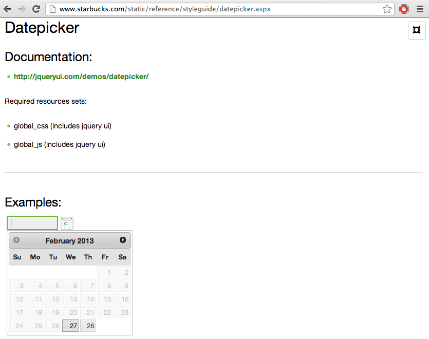
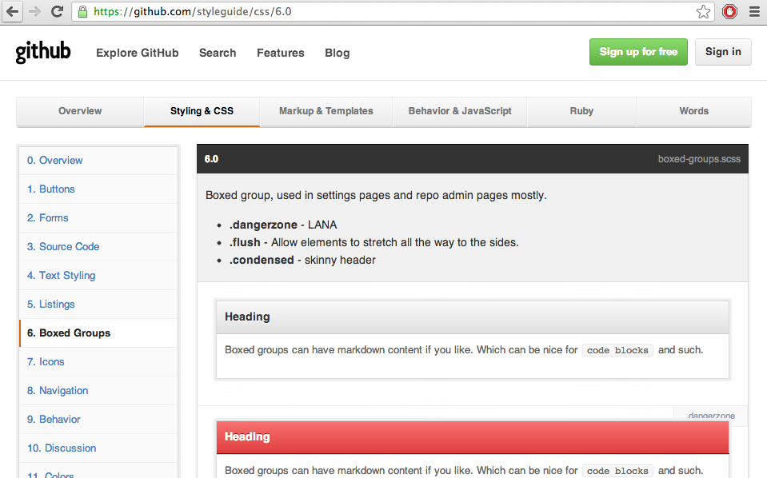

When your project's medium of communication is Tracker comments, the terrorists win.
"I make mocks of each page of the entire site."
"I turn PSDs into web sites."
"Developer, this PSD is what Designer says our site should be."
"I attach a mock, CSS and HTML to the Pivotal Tracker story."
"I pair with a Developer on implementing mocks. I ask Designer about design details."
"I answer questions about design details and accept implementation."
"After I prototype in [software], I pair with a Developer on implementation."
"I pair with a Designer on the visuals, then with another Developer on wiring."
"Sometimes, I pair with a Designer to accept visual behavior, or a Developer to accept implementation."
Style Guides do this.
Pivotal has been using the Style Guide concept since last decade.
Isolated from the rest of the Rails app
Impact only the visual components
Directly affects the assets and presentation

Manually curated
Wiki-level effort to maintain
Can be
We can do better

Generated from inline comments
Comments are lies
We can do better
Concept dates to 2010
Unit-level iteration
Overview of all visual elements
Manually curated
Unit-level iteration
Overview of the functions of a site
Manually curated
Any body of code outside of the main path will become stale
Make your Style Guide the central point of implementation
The revolutionary committee has no opinion on the following factions
Test driving Style Guide elements is possible
Cactus by Winston Teo
@ohritezel
/